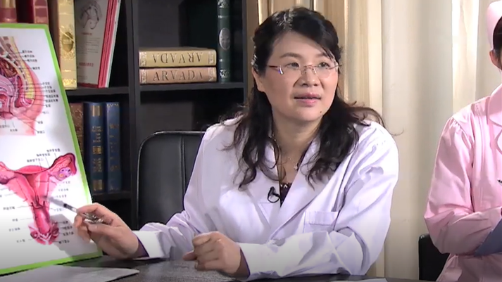

1.42 宫颈炎//余立群教授¶
余立群 主任医师¶

中国医科大学航空总医院妇科主任 主任医师 医学博士 硕士生导师；
北京妇产学会外阴阴道疾病分会常务委员；中华医学会妇科肿瘤学分会委员；中国研究型医院学会妇产科学专业委员会委员；中国老年学和老年医学学会妇科分会常务委员兼总干事。
主要成就： 致力于妇科疾病的基础与临床研究；主持各类科研课题11项，通过成果鉴定1项，发明专利1项；发表专业论文30余篇。
专业擅长： 擅长妇科内分泌及妇科肿瘤的规范化诊治，精通妇科腹腔镜、宫腔镜、经阴道手术等微创技术，对月经不调、不孕不育、围绝经期疾病及妇科炎症的诊治具有丰富的经验。
宫颈炎是怎么回事？¶
这个宫颈炎的话，主要就是因为细菌入侵到了宫颈，它才产生的炎症，那么我们了解一下什么是宫颈。
那么宫颈主要是子宫体的，子宫的一部分，它是在最下端的叫子宫颈，上面的叫子宫体，那么宫颈的下端，它是有一部分是暴露在阴道里面的，因为阴道的话是有细菌，各种各样，并且跟外界相通的，它就很容易产生炎症，主要的话就是因为一些，比如说是做人工流产，那个损伤，或者说性生活过频，还有一些阴道里面老是去冲洗，用液体来冲洗，那么造成不良的刺激，或者说还有一些就是阴道里面放置了异物，比如说纱布棉球，时间太久了，就导致这个宫颈上有个创面，那么外界又有细菌来入侵的话，就会导致宫颈的炎症。
我们宫颈炎一般分了两种，一个是急性期的宫颈炎，还有一个就是慢性的宫颈炎。
那么急性期的宫颈炎，主要就是因为一些脓性的白带，并且是可能跟急性尿道炎，急性子宫内膜炎，或者一些阴道炎并存的，还会引起下腹痛，那么如果急性期这个时候是个很关键的时期，那么如果没有得到正确的治疗的话，就变成了慢性期，这就讲有急性和慢性两种区别。
那么慢性期的话，主要表现的，同样的还是白带偏多，但是可能就没有刚刚说的那些疼痛，不舒服的症状为主，主要表现的话，就是一些宫颈的糜烂等等，所以我们对宫颈炎的认识的话，就一定要在有症状，有白带很多的情况下，我们就要好好的认识它。
宫颈炎都是由哪些原因引起的？¶
我们讲的宫颈炎主要就是细菌入侵这个宫颈，使宫颈产生了炎症，那么一些原因的话，一个就是有细菌入侵，就比如说我们常见的菌有葡萄球菌，链球菌，还有一些肠球菌，一些化脓性的菌，还有一些就是支原体，衣原体的感染，它有细菌的同时，还一定要有个创面，细菌才能入侵导致炎症，就比如说做了人工流产，或者产后有宫颈的裂伤，那么由于护理不当，那么导致细菌入侵，这是一个比较常见的一个方面。
第二个方面的话，就是一些有的人性生活过频，也会导致宫颈炎，或者说夫妻双方有一方没有注意卫生，把细菌带到宫颈来了，那么有些摩擦刺激，也会导致宫颈的炎症。
第三个方面就是说，有时候有的女性过度的强调这个卫生，老是拿那个什么洁尔阴，一些冲洗液来盥洗阴道，我们讲阴道它是自身有一定的自净作用的，使它保持这个菌群达到一种平衡的状态，如果我们过分的冲洗，把这有益的菌冲掉了，那么就会导致这个细菌的这种感染繁殖，同时的话一些液体的话，它也有的可能还有一定的腐蚀作用，甚至使阴道壁，宫颈产生过敏现象，那么所以说也会破坏这个子宫颈和阴道的正常的组织，所以就导致感染容易入侵。
再一个常见的，就是合并细菌性阴道病，滴虫性阴道炎，霉菌性阴道炎，它也会导致这个入侵，这是第四种现象。
那么第五个现象就是一些，阴道里面放了一些异物，就比如说有的人放纱布，棉球，时间放长了，这个往往是医源性的，那么我们比如说做了一些手术以后，那么局部压迫一下出血，我们放棉球，放纱布，时间长了，没有及时取出来，那么也许会导致这个细菌的入侵，导致炎症。
第六点就是说产褥期的护理不当，也是一个常见的原因，因为产褥期，分娩以后，这个宫颈扩开了，万一阴道有细菌的话，它就很容易引起感染，导致宫颈炎。
宫颈炎一般都有哪些症状？¶
宫颈炎的话要分两种，一个是急性期的宫颈炎，和慢性期的宫颈炎，那么两者会稍微有点不同，急性宫颈炎主要表现为的就是白带特别多，这个是说最常见的一种症状，那么往往有时还表现为脓性的白带，就是说淡黄色的。
同时可能会合并尿道的感染，或者子宫内膜炎等等，所以它除了白带多以外，还可能合并一些排尿刺激，尿频尿急尿痛，或者一些下腹痛，还有一些腰部的坠胀感这些等等，如果没有合并症状的人，往往表现的就是白带特别多，一些脓性的白带，有的甚至可能会有一些血性的分泌物，因为它有损伤，或者炎症，导致一些血性的白带。
那么慢性宫颈炎的话，主要也是说的白带增多，慢性期的特点，跟急性期的区别，细菌感染不是太严重了，但是可能时间长了，导致了宫颈的有糜烂改变了，它就分泌物就增多，但是这个时候不一定就是说有这个很多很多脓性白带，大部分是表现为白色的白带比较多。
这个炎症时间长了，黏膜的增生以后，可能会导致有息肉的形成，那么如果有宫颈息肉的病，就往往老是有一些白带带血，我们讲的白带加血丝，或者有的人表现为月经期比较长，就是后面月经后又有一些滴滴答答的出血。
在慢性宫颈炎的话，它时间长了，可能一些病还会合并性交疼痛，性交出血等等。
宫颈炎要做哪些检查项目？¶
首先我们知道宫颈炎的诊断，主要是说阴道脓性白带，还有就是说镜检一下发现有，每高倍镜下有十个中性粒细胞，就可以诊断了，那么我们一般来讲流程是怎么，首先我们做一下妇科检查，用那个窥器，窥器暴露那个宫颈，就可以看到这个宫颈可能有充血，水肿，或者说糜烂，这是急性期的改变，那么同时我们看到那脓性分泌物，就从这个宫颈管里面流出来，触摸宫颈的时候，可能会有宫颈会有触痛的感觉。
那么到了慢性期的话，宫颈我们看到的，就可能是不同程度的糜烂，可能表现为宫颈的肥大，还有就是可能有息肉，那么有的可能还有纳氏囊肿，等等，甚至有的宫颈坏外翻，摸的时候，宫颈是比较偏硬的，因为为什么呢，慢性期的话，它往往宫颈纤维它就增生，慢慢的它就变得比较偏硬一点，所以说这是叫慢性的改变。
那么有时候的话，有息肉或者糜烂面比较大的话，做检查的可能会有一些接触性的出血，手指套可能还有出血。
那么我们还采用一些辅助的检查，就是实验室的检查，那么最重要的宫颈炎，要排除宫颈癌的检查，所以我们通常讲的叫宫颈防癌检查，那么我们主要是做一个细胞学的刷片涂片，常规的有两种方法，一个就是巴氏方法，巴氏五类分析法，还一个就是TCT的筛查，就是通过细胞学，能够找到是否有癌细胞如果发现了异常的细胞，我们就再做进一步的宫颈的防癌筛查，所谓的叫阴道镜检查，如果阴道镜发现有问题，有可疑癌变，就在阴道镜的确诊的这个定位下，做活检，就是取这块宫颈这个可疑癌变的地方，做组织学的病理检查，这是诊断宫颈癌的金标准，最终的确诊，都一定是通过病理检查，才能确诊的。
当然了，一些病人是单纯的炎症，我们做了细胞学涂片没有问题，就不需要再做阴道镜，或者说做活检，如果发现有可疑问题的话，那医生会指导你，就是说在下一步做什么检查。
同时的话，这个宫颈炎主要是一些是病原体引起的，所以说除了我们刚刚讲的这些检查以外，还会做排除，做淋球菌的筛查，或者支原体，衣原体的培养，这些是哪一种细菌引起的感染，我们在为后面的治疗做准备，我们讲治疗方面，最主要的就是针对病原体，是哪一种病原体引起的，我们就选择不同的药物来治疗。
我们总结一下就是说，首先是妇科检查，发现宫颈有没有脓性分泌物，宫颈表面有没有糜烂充血水肿等等现象，我们触摸的时候，宫颈是不是有触痛，或者慢性的就可能会宫颈比较坚硬，做检查我们就可以发现，她宫颈的状态，那么同时我们在做宫颈的防癌筛查，要排除了不是癌，才能诊断是糜烂，或者是宫颈炎，再就是做细菌学的培养，发现是否有淋球菌的感染，是否有支原体和衣原体的，就是病原体的检测。
宫颈炎该怎么治疗？¶
我们所谓的宫颈炎，都是要分急性的宫颈炎和慢性宫颈炎这两种。
急性期的话一般来讲，那么我们主要是针对病原体的，用抗生素治疗也就是说，如果说病原体有淋球菌，我们就针对选用淋球菌敏感的，比如说头孢，头孢曲松钠，或者阿奇霉素，红霉素，氧氟沙星之类的，如果说普通的一般的，就是没有特别的淋球菌，支原体衣原体感染的话，我们就用一般的抗生素治疗，也是用广谱的，比如说用头孢加甲硝唑这个治疗就行了，但是一般急性期的宫颈炎，大部分是由淋球菌和支原体和衣原体感染引起的，所以很多情况下，都是选择阿奇霉素比较多，红霉素类的药，或者氧氟沙星的这两种比较多。
那么慢性的宫颈炎的话，往往就针对不同的情况来，比如说她是宫颈糜烂的话，我们就选择可能物理治疗比较多，比如激光，冷冻，微波治疗等等，这些治疗的话都大同小异，它的治疗的原理，都是破坏它的柱状上皮，这个宫颈炎的话，所谓的糜烂，其实是指柱状上皮外移，因为我们柱状上皮一般组织比较菲薄，看上去那个尖子都是红红的颜色，所以感觉上就叫糜烂，但它这个组织比较薄，它就很容易受外界的感染，那么它只有说合并了分泌物特别多，或者性交，有时候性生活会出血，才会去治疗它。所以说我们就会把这个通过物理的方法，把这层的柱状上皮把它破坏掉，消灭掉完了以后，它那个组织要修复的话，往往就是有宫颈阴道部的，是鳞状上皮所覆盖的，这个鳞状上皮就偏厚，我们讲叫复层鳞状上皮，比较厚，它对细菌的抵抗力也比较好，它表面是光滑的，所以也就是说把这个表面糜烂面烫掉以后，它组织新生出来一层这个叫光滑的鳞状上皮，就叫修复了，
那么必要的时候也可以，可能会选择做LEEP手术，就是环形锥切术来治疗。
环形锥切术的话就是说，现在在门诊可以做的一个，也是属于物理治疗的，手术治疗的一部分，这个一般在宫颈炎的话，很少用这个环形，就是有时候会怀疑可疑癌变的时候，才开始用这个治疗，锥切的话，就是指这个把这个宫颈，我们讲最容易癌变的地方是宫颈管跟鳞柱交界的部分。
就是把这一块的组织做一些锥切，外面的圈大一点，里面的锥尖小一点，所以就把这个容易癌变的这个位置，把它做了一个环形的切除，同时把病变去掉了，最主要的还是可以明确诊断，是否达到了有癌变，或者有什么侵蚀，是这种。
那么其它的还有治疗的话，如果有宫颈息肉的话，我们就针对把宫颈息肉直接摘除就完了，还有一种叫纳氏囊肿，我们在临床上，往往碰到很多患者，着急的来问这个宫颈纳氏囊肿要不要治疗，其实宫颈纳氏囊肿，它是一种慢性宫颈炎的一种表现，但是有的时候也属于一种生理现象，其实是可以不治疗的，那么纳氏囊肿是怎么形成的，往往是，我们讲柱状上皮，鳞状上皮，它经常会反复的交替来修复的，那么有的时候把那个腺管，宫颈管的腺管阻塞到了，它就会形成局部的积液，就形成了黏液性的叫纳氏囊肿。
那么什么时候需要治疗，如果那个纳氏囊肿比较多，比较大，容易有感染，看上去那里面的囊泡，一般我们讲是清白色的小泡，比较小一点点的，一般来讲是不需要处理的，因为比较大，又是比较脓性的，我们才需要处理，这种纳氏囊肿要做治疗，也是做激光或冷冻，激光治疗，把这个囊肿挑破，把黏液排出来以后，那么也就慢慢的就形成了新生的，鳞状上皮就被修复了，主要的治疗就包含这几种，也就是急性期就用药物治疗，那么慢性期，原则上糜烂比较明显的，我们就采用物理的疗法，物理治疗，比如激光，冷冻什么都行，当然还一些是药物治疗，也有，糜烂比较浅的，我们现在也有带一点腐蚀性作用的药物，来做这个治疗。整体来讲就是说，让表面的柱状上皮破坏掉，让新生的鳞状上皮来覆盖它，就变成光滑的，那么就相对来讲就使它以后分泌脓性白带什么就比较少一点，达到治愈的目的。
治疗宫颈炎的话，选择物理治疗，一般原则上都一定要严格控制时间的，一个就是说一定要在月经干净三到七天之内做，还有的话，一定要做宫颈刮片，或者阴道镜的检查，排除宫颈癌，这两点是最重要的。
治疗以后的话，要注意它的防护，就比如说不要继发感染，所以说要注意外阴的清洁等等，那么还有就是要注意宫颈糜烂在修复过程中，不能有性生活，这个一般比较表浅的，修复治疗是三到四周会完全好，有的糜烂比较深的，要六到八周才好，所以一般常规选择了物理治疗的话，都要禁性生活两个月，两个月也就是八周的时间，那么治好了，才能有性生活，这一点是很重要的。
宫颈炎跟宫颈糜烂是一回事吗？¶
宫颈炎和宫颈糜烂，不是一回事，我们讲了宫颈炎就是使宫颈的局部发生了炎症，因为细菌的入侵，宫颈的裂伤，导致了一些分泌物增加等等这些，那么它是需要治疗的。
那么宫颈糜烂的话，在临床上我们一般分了叫真性糜烂和假性糜烂，我们大部分其实都是说的是糜烂糜烂，其实都是指假性的糜烂，是一种生理现象，那么我们通常说的糜烂就是说，看上去宫颈比较红，比较潮红，就感觉是糜烂了，实际上我们看到的是一个，叫柱状上皮外移的表现，那么宫颈分了柱状上皮和鳞状上皮两种，那么如果柱状上皮，它长得比较外一点，就叫柱状上皮外移了，所以我们就看到那个红红的改变，就是我们通常说的糜烂，这个宫颈的柱状上皮，往往会受生理卵巢激素的影响，主要是雌激素的影响，雌激素的作用会使这个柱状上皮增生，往外移，那么如果绝经了，雌激素下降了，它柱状上皮因为往里面去，往里面去就表现为光滑了，实际上我们说的糜烂糜烂，原则上，往往是叫柱状上皮外移所导致的，它不是宫颈炎，原则上是不需要治疗的。实际上我们通常说的这个，其实现在基本上都慢慢的都会废弃这个宫颈糜烂这个概念，都是说都建议用叫什么，柱状上皮外移，或者上皮异位。
当然了还一种，就是宫颈的柱状上皮，我们讲的移位，它有时候可以跟宫颈炎同时存在，就是说有这种糜烂的，它实际上也有宫颈炎同时存在，我们讲宫颈炎主要的话，就是说脓性的白带特别多，同时我们在显微镜底下查它的白带，会很多的白细胞，那么才能诊断宫颈炎，细菌感染。
宫颈炎会影响怀孕吗？¶
宫颈炎是会影响怀孕的。
我们讲正常怀孕，是精子通过阴道，一定要经过宫颈这一关，再到宫腔，停留在输卵管，在输卵管等待受精，同样卵子排卵以后，就在这里受精，所以说这个宫颈管的话，它是我们精子通过这个进入到输卵管的一个部分，如果这个地方有炎症的话，那么脓性的白带等等，它会大量的吞食精子，那么杀伤精子，使精子的活力下降，就是说会影响精子的功能。那么我们有宫颈炎的话，它往往都是因为有细菌感染导致的，比如说它可能是有支原体的感染，衣原体的感染等等，也是会影响精子穿透宫颈，改变宫颈黏液的pH值，那么甚至产生抗精子抗体等等，影响精子的功能。
那么还有一些病人的话，我们讲同样有支原体衣原体的感染，它可以导致宫颈炎，它也可以跟子宫内膜炎，盆腔炎并存，也导致输卵管的阻塞。我们讲如果输卵管有阻塞的话，它肯定就使精子和卵子碰不到一块，肯定就导致不孕了。
再一个就是说宫颈息肉，有的时候就正好堵在宫颈管这个位置上，那么影响精子的穿透，就导致不孕，
所以说这个宫颈炎的话，它是会影响怀孕的，它主要的话就是说，就是因为白带炎症导致脓性的白带，影响了精子的穿透，吞食精子，使精子的活力下降。
宫颈炎会导致宫颈癌吗？¶
宫颈炎的话，可能宫颈癌的发生率会增加个八到十倍，但是一般来讲，普通的炎症它不会导致宫颈癌，这个宫颈癌可以说是，基本上都是由HPV（人乳头瘤病毒）感染导致的。但如果有宫颈炎的妇女，她患宫颈癌的可能性会增加，就是因为，万一她感染了HPV病毒，那么有宫颈炎的人，HPV病毒可能就容易感染更多的细胞，如果是宫颈没有炎症的话，她就可能自身就容易将HPV病毒清除掉。
没有HPV病毒的感染，原则上是不会有癌的。所以说现在HPV病毒，是世界上唯一发现的一个癌症的原因，就是宫颈癌的原因。那么HPV病毒它发展为癌，是有很多很漫长的过程，我们常常一般说的三到八年，就是很漫长的时间导致的。
所以说宫颈炎的话，只有当合并有HPV病毒感染，才可能转为宫颈癌。
HPV感染首先是炎症到癌，它是一个非常漫长的过程，中间可能会经历癌前病变到癌这个过程，最少持续两年以上，那么两年以下的，有些病人自身的抵抗力好，它就会清除掉，所以说大家发现了HPV病毒感染，不要太过紧张。但是，不要掉以轻心，要注意随访，它有些病毒自身消除掉了，一般都没问题，但它自身病毒消除，一般都要八个月到一年以上的过程，所以说我们发现了HPV感染的话，原则上要八个月到一年才开始再复查，不要三个月半年就去复查，是这样的。
我想补充一点这个，就是我们HPV病毒，它分了高危型和低危型，我们在中国人最容易导致病变的就是16型的，是最常见的，或者其它的高危型也有很多种类型，发现了高危型的病毒感染，特别是HPV16感染的，有时候常规都会做TCT和阴道镜的检查，有的现在专家都指出来，HPV16，它是最容易导致，70%的宫颈癌都是由HPV病毒16的阳性导致的，所以说原则上就会做阴道镜的检查，看看是否有癌变，或者癌前病变。
得了宫颈炎能过性生活吗？¶
宫颈炎的话，一般来讲，慢性宫颈炎不太影响性生活，在急性期的话，还是要禁止性生活，因为这个时候要治疗，因为这个时候宫颈炎的话，往往宫颈都充血，水肿，表皮容易有创伤。如果有性生活的话，就间接的摩擦会加重病情，也会有身体不适，有的女性可能就是说，会非常讨厌这种性生活，因为很可能还会出血等等，所以在急性期宫颈炎，肯定是强调禁止性生活，在慢性期的宫颈炎，如果她经过了初步的处理以后，就是说没有特别不舒服的症状，可以性生活。
宫颈炎会产生哪些严重危害？¶
那么对于宫颈炎的话，如果她引发更深的病变，比如说导致了慢性宫颈炎，可能就有这个使宫颈有个长期的刺激，会导致炎症，息肉这些等等。
第一它主要的话，就是会影响性生活，因为我们讲宫颈炎表面有充血炎症，性生活可能会出血，或者女性也会有不舒服，疼痛，那么她就比较讨厌性生活，所以说从而就可能会导致夫妻的感情（不好）。
第二点的话，就是说宫颈炎会增加宫颈癌的发生率，我们知道感染了HPV病毒，那么持续的感染，会导致宫颈癌的发生，如果有宫颈炎的话，HPV病毒可能就不容易清除掉，那么它就会导致持续的感染，从而发生癌症。
第三点就是宫颈炎时间长了，可能慢性的刺激，会导致息肉的形成，或者一些纳氏囊肿，还有一些外翻等更深度的病变。
那么再有第四点就是，宫颈炎可能还会导致流产。因为宫颈的组织，发生这个变化弹性下降，有可能会导致产生进展不好。
宫颈炎需要和哪些疾病区分开？¶
宫颈炎的话，我们广义的看，都是说就是一种宫颈糜烂的表现，所以说主要就跟宫颈的生理性的糜烂（区分），柱状上皮外移引起的，还有一个就是说，是否有存在癌前病变，我们通常的叫上皮内瘤变，宫颈炎到癌症之间有个过渡期，叫癌前病变，再就是一些早期的宫颈癌，有的外观上，可能就是单纯的一些糜烂的改变，这个要区分开，这个要检查的话，主要就是通过HPV和TCT的检查，才能够确诊，有问题再做阴道镜下的活检，这个可以排除癌。
第二个就是说，宫颈的囊肿，宫颈腺的囊肿，它本身就属于慢性宫颈炎的一个表现，就纳氏囊肿，大家不要紧张，碰到这个病是不需要治疗的。它的原理的话，就是这个鳞状上皮，修复柱状上皮的过程中，使宫颈的腺管管腔，产生了阻塞，所以就有一些黏液排不出来，或者一些治疗宫颈炎以后，使这个宫颈腺管狭窄，导致黏液潴留，所以我们有时候叫潴留囊肿，这种的话在外观看，就是宫颈表面有很多小绿豆大，或者有的是黄豆大小，那个青白色的小泡，凹凸不平的凸起这种东西，这也是表面也是很光滑的，原则上这个是不需要治疗的，只有合并感染的时候，或者是那个囊泡特别大才做处理。
最主要鉴别的就是说，跟宫颈癌的鉴别，有的病人表现为一个息肉，那么其实是一个宫颈癌，所以说这一点，我们要非常的要提醒大家注意的。那么有时候宫颈息肉，表现的也是一种外口脱落一个组织，那么就是说一定要取下来做化验，那么有时候我们通常碰到一些病人，给她取了息肉，她拒绝做活检，她就不去送病理，觉得就是息肉，确实，宫颈上凸出的一些红色的组织的话，往往就是说看起来是息肉，有一部分其实就是一个宫颈癌，我们在临床上就碰到过一个老太太，看了是息肉活检，看上去就跟这个息肉一样的样子，因为我们叫息肉，原则上是一个是比较，还是比较光滑的，组织比较脆一点，宫颈癌的话，原则上，就是癌性的东西都比较糟脆，这个糟脆的组织，原则上是像癌，息肉往往就看起来像，就是草莓色了，那个红红的一点，那么所有的病历都要送病理，就是因为一定要排除，也有个别癌，就是表现为息肉样改变，那么实际上活检就是癌，所以说取下来的东西一定要通过病理，病理就是诊断是癌还是炎症的这个标准。
所以说整体来讲，宫颈炎最主要要鉴别的，就是说跟癌的鉴别，和癌前病变的鉴别，这种就是通过做TCT和HPV的筛查，排除宫颈癌，如果有这两个检查，有问题，再做进一步的阴道镜下的检查，或者说活检，送病理学检查，来确诊，整体就是这些。
治疗宫颈炎需要阴道冲洗吗？¶
治疗宫颈炎，原则上是不需要阴道冲洗的。因为阴道它有自净作用，就是阴道里面，它自己维持了一个动态平衡，一个细菌的动态平衡，就是喜氧菌，厌氧菌等等，它是有益于宫颈，就是说维持阴道酸碱度，它是阴道pH值是在，大概是小于4.5，它就正常的一种酸性环境，它是对有（致）病的微生物，它是有杀害作用的，对主要是乳酸杆菌比较多，就是说达到一种动态的平衡，乳酸杆菌是分泌酸性液体的，它是相对来讲有自净的作用。如果你做了阴道冲洗的话，会让这个菌群失调，所以使阴道自身的抵抗力下降，这样容易导致细菌阴道的炎症，原则上不需要做阴道冲洗。
宫颈炎会影响胎儿的发育吗？¶
一般我们讲就要看那个病原体了，一般宫颈炎的病原体，很多如果是淋球菌，衣原体，支原体感染导致的话，它对胎儿还是有影响的，比如说衣原体的话，它主要的话，传播途径是母婴的传播途径。所以说孕妇感染了以后，阴道分娩的时候，大概60%到70%的新生儿，可能会有被感染的危险，引起新生儿的结膜炎，肺炎，中耳炎，女婴的阴道炎等等。那么其中这个新生儿眼睛的结膜炎，发病率是最高的。同时的话，这个沙眼的衣原体，它可能还导致流产，宫内死胎，或者新生儿死亡的可能性。所以说衣原体的感染，肯定是影响会传给胎儿的。
那么还有一个就是病原体，就是淋球菌，也是一个导致急性宫颈炎的一个常见的细菌，那么也会导致流产，早产，甚至死胎的现象。那么淋球菌有时候进阴道分娩的话，也会传给新生儿，导致新生儿淋菌性的结膜炎，甚至就是直接患淋病了。所以说整体来讲，引起急性宫颈炎最常见的两种菌，一个是淋球菌，一个是沙眼衣原体的感染，它是很容易影响小孩的，会导致流产，死胎，或者说那个新生儿感染结膜炎和淋病等等。
宫颈炎会导致流产吗？¶
宫颈炎的话，原则上的话，宫颈炎如果慢性的炎症，可能会导致宫颈的肌纤维比较硬化，弹性下降，可能会产程不顺利等等，宫颈炎也是流产的一个常见的原因。
得了宫颈炎有哪些饮食禁忌？¶
原则上就是说宫颈炎的患者，她对饮食来讲，没有特别的要求，但是我们应该还是说合理健康的饮食，尽量吃一些容易消化的一些高蛋白的饮食，增强自身的抵抗力，不要吃那种辛辣刺激性比较强的东西，最好少抽烟，不喝酒等等。
得了宫颈炎必须要注意哪些事？¶
宫颈炎治疗期间的话，最重要的一点，就是一定要禁止性生活。因为性生活会加重宫颈炎的发生，也会使这个宫颈病变不容易修复，这是一点。
要合理安排自己的时间，经常运动，提高机体的免疫力。我们讲炎症，很多是因为一个是细菌的入侵，还有一个就是自身抵抗力下降。
再就是宫颈炎的期间，一定要积极的治疗这个炎症。那么要做到最主要的就是注意月经期间的卫生等等，首先最主要的听医生的话了，按医嘱治疗，用药要规范，要记得坚持用药，这一点很重要。
那么对慢性宫颈炎的患者，特别是要做宫颈的涂片的检查，做防癌筛查，要排除宫颈癌。我们讲宫颈癌有两个高发年龄，一个就是35岁到39岁，还有一个就是45岁到55岁之间，这都属于宫颈癌的好发时间，所以说这个期间的女性，更要注意宫颈癌的筛查。
也不要太紧张，有的人认为宫颈炎，可能就是宫颈癌前病变了，会比较担心。我们知道宫颈炎，它是由HPV（人乳头瘤病毒）感染，它才导致宫颈癌的，所以说的话，患了宫颈炎我们积极的治疗就可以了，不要太紧张。我们只要做了防癌筛查，目前比如说没有HPV的感染，宫颈的细胞学没有异常，没有说癌前病变，就积极的治疗就可以了，这个心情放松了，那么身体的抵抗力就容易好，就容易治疗疾病。
那么所以说，患了宫颈炎一定要耐心的治疗，就是说要注意休息，不要太劳累，注意个人的卫生，就是说特别是在月经期，一定是要注意清洗外阴，穿比较宽大透气的裤子，最好是穿棉的内裤，比较透气的内裤，不要穿化纤的那种内裤，这是很重要的。
再就是用药的时候，一定要在月经干净以后三到七天开始用，来月经的时候停用药物，月经期不能用任何的药物。
宫颈炎用哪些药好一些？¶
宫颈炎的话，主要是跟急性期和慢性期不同。
急性期的话，原则上还是针对这个病原体来做治疗，比如说有淋球菌，还是有衣原体感染，我们就选用相应的红霉素类的药，阿奇霉素等等，药物治疗。
而慢性宫颈炎的话，相对来讲，很多是局部治疗为主。如果病灶比较浅的，糜烂面不是太广泛的话，可能选择一些药物，比如说保妇康栓，还有一些聚甲酚磺醛栓，专门治疗宫颈糜烂的药，就是使它的局部的柱状上皮破坏，以前还有点硝酸银等等，带腐蚀性的药物治疗，也都是可以选择的。
宫颈炎需要手术吗？¶
宫颈炎一般来讲的话，是不太需要手术的。
我们讲急性炎症主要是药物治疗。慢性炎症的话，如果说白带特别多，性生活会出血的时候，可能才需要干预。
就比如说，我们讲的物理治疗算手术吗？不算，就是说如果有慢性有一些病变，有出现出血，我就用局部的物理治疗，比如说激光、冷冻、微波治疗就行了，它这个都属于物理的方法。其实这几个方法都大同小异，最重要的目的，就是通过物理电的方法，来使这个糜烂的创面得到破坏，完了以后，新生的上皮，鳞状上皮就会修复它，就达到了治愈的目的。
也有个别的一些少部分的病人会选择手术治疗，那这种情况主要见于什么？就比如说有宫颈息肉形成了，我们可能就直接做息肉的摘除就行了。
还有一些久治不愈的宫颈糜烂，或者说老是引起反反复复的白带多什么的，我们可能会选择做个小的宫颈的锥切术，就LEEP手术就可以，在门诊做的，就把那块容易病变的地方，把它环形切除，也是可以的。
宫颈炎物理治疗哪种方法好一些？¶
这种的话，相对来讲都有各有优缺点，可以说是一样的，激光、冷冻，没有太多的选择，比如说哪种推荐激光，哪种推荐冷冻，没有太大的差异，治疗效果都差不多，它的原理都是类似的，就是使它表面的这个上皮破坏，就柱状上皮破坏掉，完了以后，新生的鳞状上皮来修复它，就可以了。